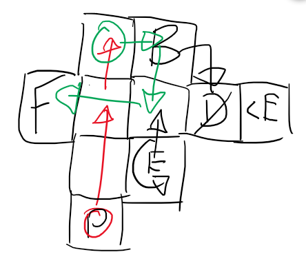

Welcome to my portfolio.
I would like to prove to you my fascination with games and everything that surrounds them:
their history and its consequences; their visual designs, their gameplay, and the technical elements that underpin everything.
Desert Dig is a short, tile-based puzzle game that I made in a week for a game jam. It placed #16 in the Game Design category out of over 700 entries from around the world. You play as my attempt at drawing a meerkat in 8x8 pixels (harder than I expected), and your aim is to reach the flag in each of the twelve levels without being spotted by an enemy.
You can try it out here.
The theme of the jam was "holes". As that was revealed, I started brainstorming ideas. My first thought was "rabbit hole". I also considered golf - I thought that some kind of reverse golf might be interesting. In the end, I correctly guessed that golf would be quite a popular theme, and stuck with the "rabbit holes" idea, changing the rabbit to a meerkat since it's a less obvious choice for a burrowing animal.
Another idea stuck out to me: that of "digging yourself into a hole". This made me think of puzzle games, and a puzzle game seemed feasible. Eventually, I arrived at the final concept: a stealth puzzle with both overground and underground movement, where you can block your path by digging holes.
Here is the concept for one of my favourite levels.
I planned each one out in a similar fashion, with arrows showing the correct path through the level: red represents underground movement, while green represents overground. P is the player's starting position, F is the flag, E are enemies; B and D are a button and a door. I tried to embody the idea of tricking the player into thinking the solution was obvious, while it was really something more complex, to create the feeling of satisfaction that is a big part of the genre's appeal.
The version you see is not exactly the same as the one I submitted. To prepare it for my portfolio, I responded to some of the feedback that I recieved during the jam:
I also decided to export the project to HTML5 rather than to a native executable so that you could play it more easily. However, this caused a problem: a bug in Game Maker Studio's HTML5 compiler caused flags to check for the player before enemies could, allowing the player to beat level 9 far more easily than intended by going straight to the flag.
To account for this, I made a special flag object that makes sure to prompt all enemies to scan for the player before it lets them win.
Overall, I am satisfied with this project, but if I had more time, I would like to make more levels. The patrolling enemies have potential to be used in many more interesting ways, and I would like to fully explore them. Had I had my time again, I would definitely have been less restrictive on myself with the graphics: I wanted to make each sprite 8x8 and use only four colours, but that way I struggled to make some objects legible. I have particularly recieved comments that the flag is hard to see.
To test my programming ability, I decided to try and create a depthmap generation program without using machine learning. I thought it would be an interesting challenge.
I wrote my code in Python, which turned out to be something of a mistake, since Python is quite slow, and my algorithm has a time complexity of O(w²h), where w is the image's width and h is its height. I tried to rewrite it using the CUDA GPU programming framework, which would have made things considerably faster using the graphics card's concurrent processing, but my GPU was too old to run it.
Click here